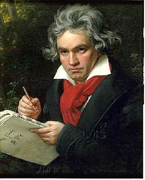
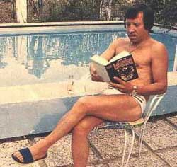

Cantantes españoles
 De: La Frikipedia, la enciclopedia extremadamente seria.
De: La Frikipedia, la enciclopedia extremadamente seria.
 Un hombre asombrado ante la sensibilidad musical de Valderrama.
Desde las remotas épocas de las cavernas podemos ver en las cuevas españolas algunas de las representaciones más importantes del Arte. Desde las pinturas rupestres desde los ojos y manos del Fary -que posteriormente se pasaría a la música zarzuelera- hasta las grabaciones primitivas de Andrés Pajares, estos españoles curiosos revolucionaron al pueblo-masa y ganaron mucho dinero, invertido en armas y prostíbulos.
Lo cierto es que las técnicas de composición e interpretación españolas, en la actualidad, y según los más reputados estadistas mundiales (Bill Cosby, Los Muppets, Shopenhauer) se suelen situar en la edad de piedra o incluso en la era pre-universal; pero dentro del país se venden sus discos, que es lo que cuenta. Hay que resaltar el quiebre que hubo en los años 50, con la aparición de Valderrama, éxito que tuvo mucho que ver con el márketing de muñequitos Valderrama & co., que era una graciosa figurita que podías utilizar para masturbarte.
Hasta entonces, los mal llamados músicos se servían de panderetas y piedras, lo que se conoce como música de disfunción; Goya hizo un par de buenos temas que les metía bastante caña. Ahora pasamos a detallar cada uno de estos cantantes vanguardistas, al mismo tiempo que folklórikos y simpáticos.

La escuela de cantantes de A. Pajares, con sus miembros más ilustres.
Cantantes españoles primordiales y ejemplares
 El Fary, poco antes de que saliese su tatarabuelo muerto de la piscina, con el consiguiente susto y las bromas consabidas.
Futurible cantante español de aquí a unos años, ¡ahora dos octavas más agudo!
Aunque no lo parezca, el cerebro de Mr. Pajares está ahí dentro, con todo lo que conlleva de cara al arte. Ahora dos modalidades: te canta los Buenos días o cacarea. ¡¡¡Compra!!!
- Don Juanito Valderrama fue un buen tipo que se acostumbró desde niño a cantar para sus brothers gitanos; cuando su padre le dejó salir de casa, floreció en el mundo un cantante que, a la postre, sería el precursor de todo lo español. Después de una vida repleta de éxitos -cantó el famoso "Happy Birthday (to you)"- y algún fracaso -muy joven se quedó calvo-, pasó a la historia y le da nombre a Valderrominia, una zona inhóspita del Congo, de donde logró echar a los indígenas para su empresa de muebles. Corrió una vida de suerte desigual, como cantaría en su sentida "Balada a los juncos y la luna", en la que por cierto dejaría ver los inicios de su locura, que a la postre le volvería gay. Finalmente, retirado del mundo de la música, y alejado de sus hijos y conocidos, grabaría el mundialmente conocido "Gatos verdes/Perros crepusculares". Sus versos más conocidos suelen hablar sobre la mujer: "te quiero con locura/ aunque seas solo una/ maldita golfa" ("Oda a las pelirrojas"), "Un día me desperté/y te vi entrar al baño/tres tetas que tenías/ maldita golfa" ("Te amo", versioneada años más tarde por Pajares). Antes de morir dejó escrito con sus heces en la pared: "Amor es amar/Amar es amor/Y al revés es Roma/Y al derecho es amor/Otra vez"; según los psicólogos forenses, estas palabras mostraban su carencia emocional y un asco hacia todo lo de fuera de su piel, lo cual, a la postre, le llevaría a la muerte en vida, y en muerte.
- Andrés Pajares (aka Mr.X), un hombre soberbio y lleno de odio hacia cada cosa, tuvo miles de hijos repartidos por todo el mundo; por ello se suele decir que "quien no es hijo del Pajares, no se lo merece". Después de deshacerse de su harén español, se casó con doña Lina Morgan, reina del baile '43. Durante estos años, aunque fue feliz, su calidad musical se vio brutalmente afectada, y se descartó que pudiese ser la reencarnación del gran J. Valderrama. Sus principales éxitos fueron: "Satisfaction", "La Ramona" y "Dos tontos muy tontos". Su muerte es aun un misterio, aunque parece probado que Lina Morgan lo envenenó poco a poco. Según la película de Kubrick, "Un día con Andrés", Lina Morgan (interpretada por Dustin Hoffmann) le unta mercurio en los bocatas, antes de ir a clase. Poco más que añadir acerca de este ser, aparte claro está nombrar su pata de palo que le hizo famoso, la cual solía lanzar al público durante sus conciertos, y El Mismísimo Valde (Valderrama) compuso en su honor "Pata palo-cabeza palo", en clara referencia a su aparente mongolismo.
- Mecano: Se trata de una banda de vagabundos que el mismísimo padre de Pajares encontró en su ataud; el proceso estilístico por el que los llevó fue espectacular: primero los maquilló en plan 80enteros para luego abandonarlos de nuevo y robarles la pasta. La banda de toxicómanos de nuevo se cruzaría con el padre de Andrés P., tras lo cual desaparecerían del mapa más de un siglo. Ya en el siglo XXI surgió de bajo las piedras la cantante Torroja; su piel sufrió un proceso de plastificado que le parece gustar a la famosa cantante, la cual alcanzó nueve octavas con el sobrio tema "Whisky con testículos"; Mecano es un producto registrado.
- El último éxito español, El Fary, llegó a su posición de privilegio gracias al remake de la canción del siempre presente Valderrama: "Doscientas ventisiete y un tercio gardenias para ti", también conocida como "la canción del Fary" o "Quita eso". Este hombre puso de moda los vaqueros y el suéter de terciopelo rosa; se retiró a su villa del medio del océano, libre de toda posible guerra, moribundo lanzó ataques antisistema, con lemas como "Las mujeres son todas unas perras", "Únete a la revolución de la muerte sufrida" o "Que os den", que tuvo un gran éxito.
- Sus hijos, Raphael Fary y Manolo Fary Escobar, se dedicaron a plagiarle, y aunque nunca tuvieron el mismo éxito que El Fary, que batió todos los records de venta, logrando 307624096 discos de platino y un viaje a Albacete, y otro a su base secreta en Marte, digo que sus hijos perecieron sin haber probado las (dulces aunque venenosas) mieles del éxito, por lo que desenterraron el cadáver del padre para tratar de revivirlo. Aunque estuvieron a punto de conseguirlo, gracias a las fórmulas químicas de Rapha y a las prácticas mágicas de su hermano, hubieron de simular su regreso de entre los muertos manejándolo cual títere. Aunque el truco fue descubierto, el cadáver fue disecado para su honra, y lo podemos ver en esta base marciana que tanto le costó hacer, después de muchos años de trabajo... Pero esto, es otra historia.
Curiosidades
- En Francia y Portugal se creen que Valderrama nació en sus respectivos países; lo cual muestra la calidad musical de aquel "hombre", y es un motivo más para reivindicarle desde la patria.
- P.Sarasate, cantaor de Los Panchos, logró grabar en los mismos estudios que The Beatles; la misteriosa banda compartió estudio con The Bill Cosby Band.
- Según la orografía, los músicos preferían música clásica, instrumentos de cuerda y clases de pintura; o bien, habiendo nacido frente al mar, se decantaban por el dance y músicas tribales, así como la mal-llamada "comida rápida o basura" y matar a los blancos.
- En el grupo Los Pezqueñines, grupo de grindcore surgido en la época postfranquista, su joven cantante era obligada a conducir día y noche durante sus famosas e interminables giras. Su muerte se produjo por falta de sueño, no obstante la utilizaron sin problema en los conciertos hasta que el cuerpo se descompuso: es una de las ventajas de hacer playback.
Autor(es):
- Nexo
- Frikiman
- Alex2610
- Khazike Khashondo
- Azulejos
- Choppe
- Cibercrank
- Dark temptation
- Shadowmura
Frikipedia 2005-2016, Licencia
GFDL 1.2 - Extraído por FrikiLeaks